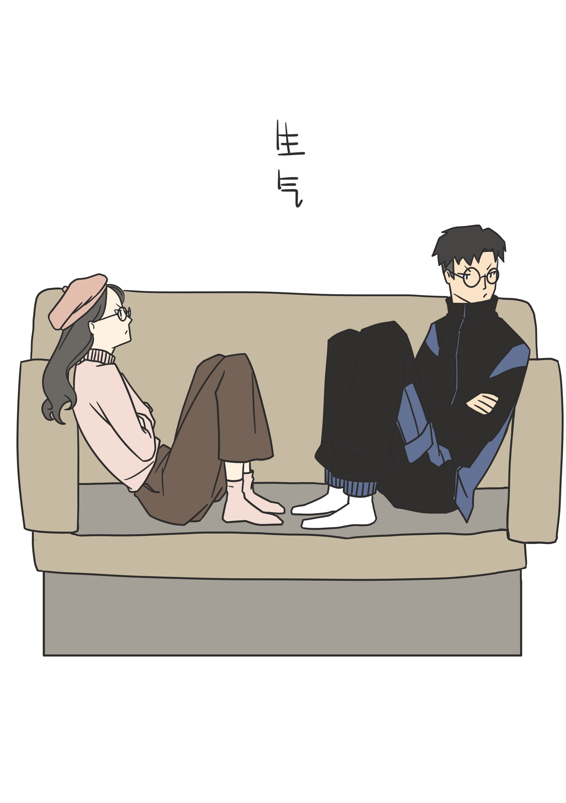
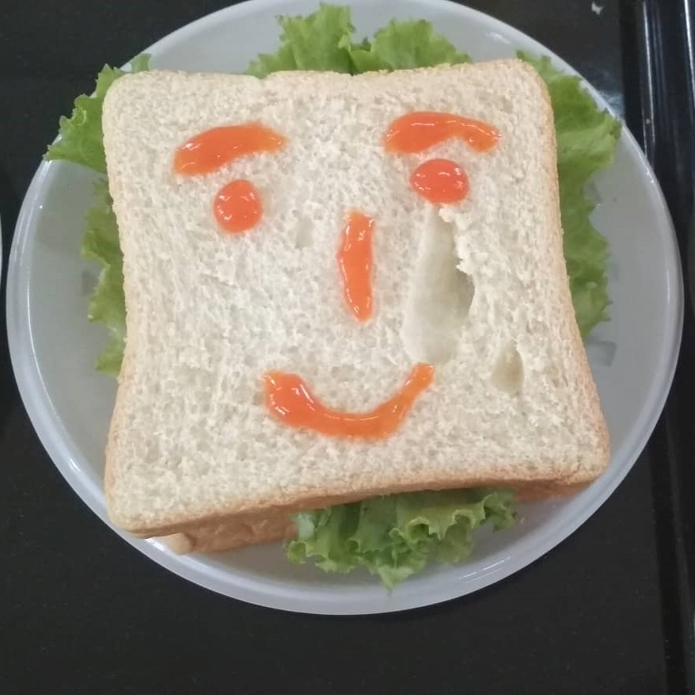
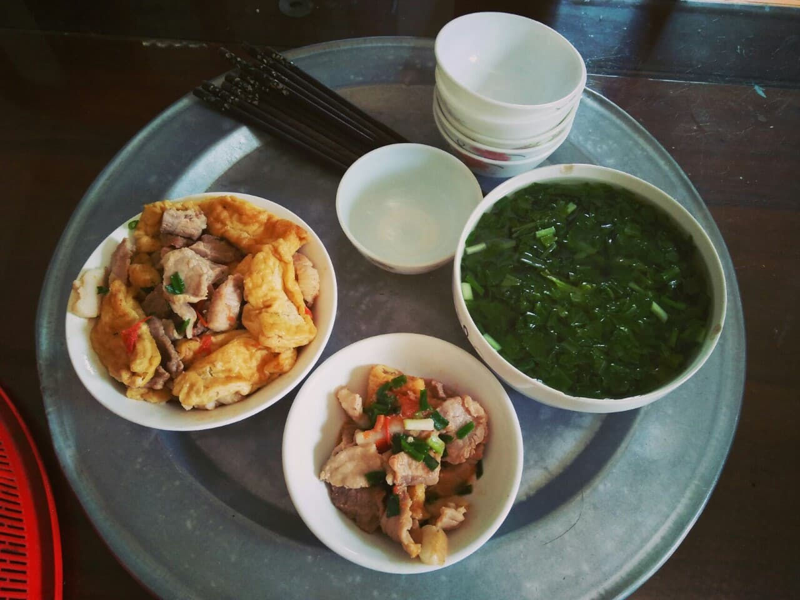
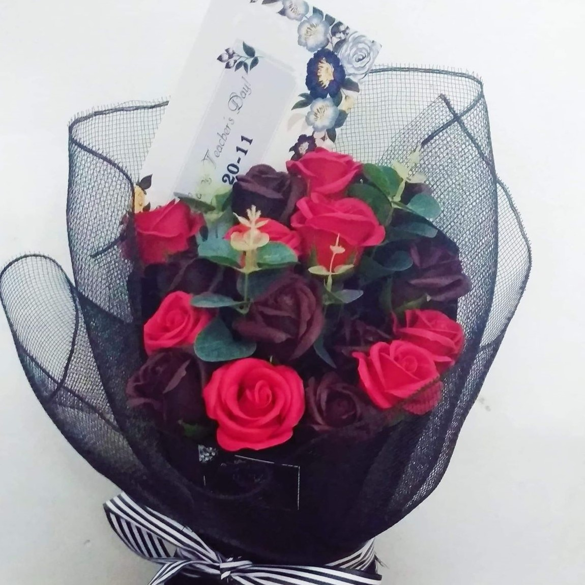
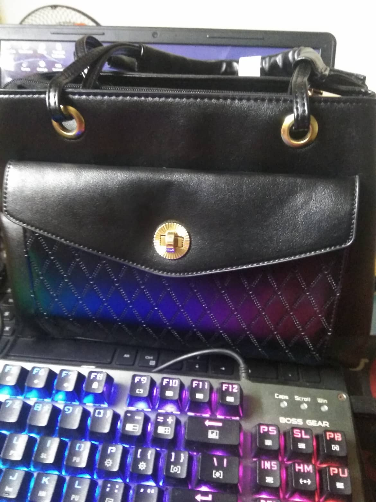
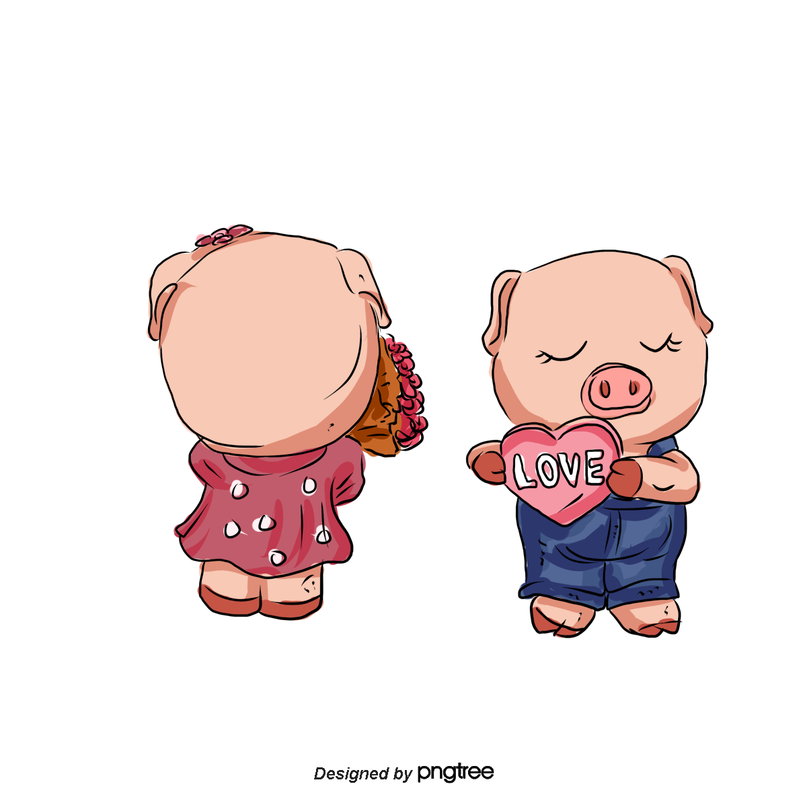
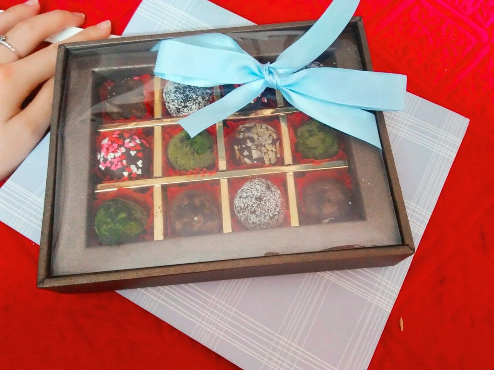
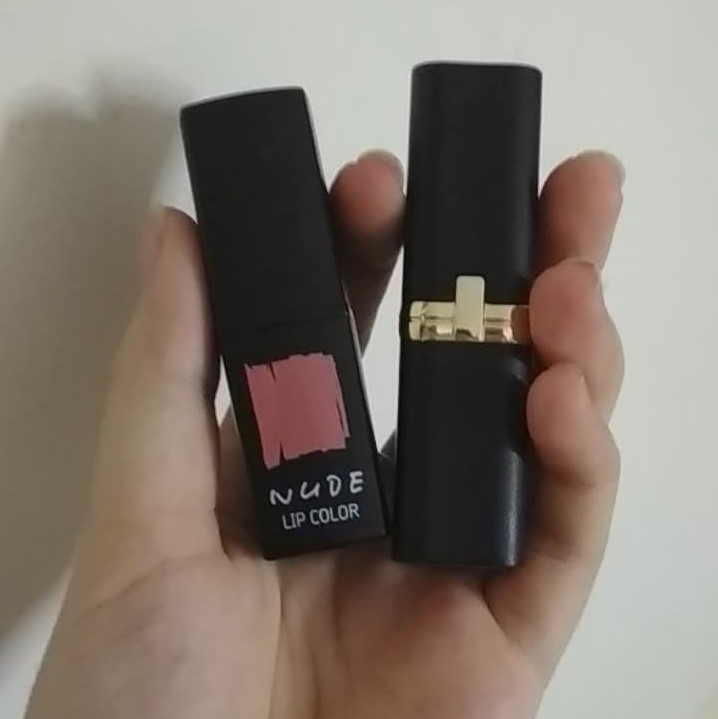
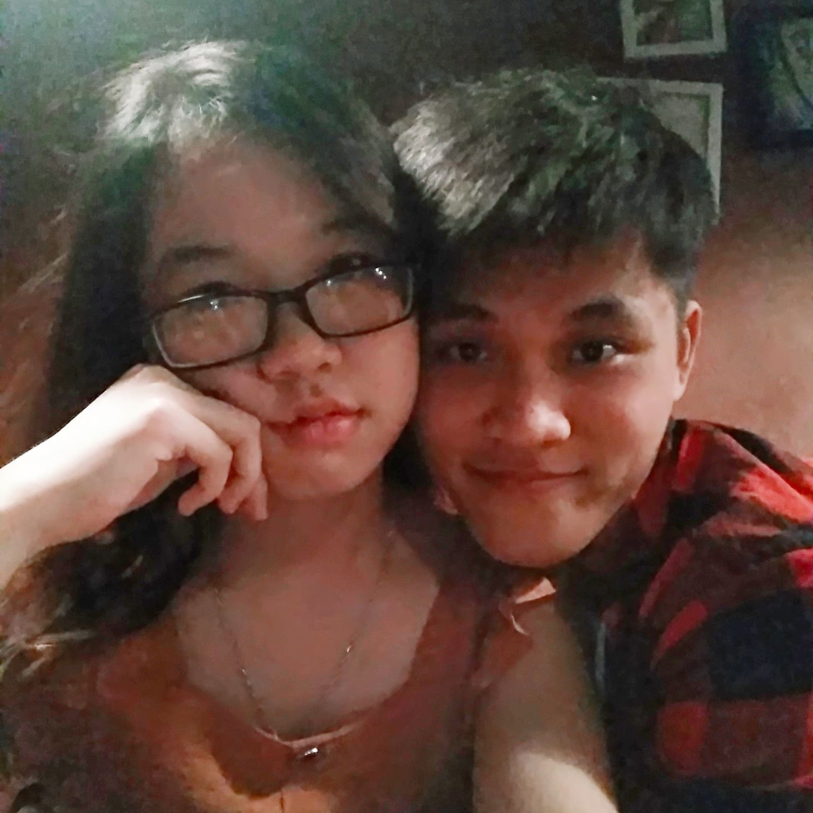
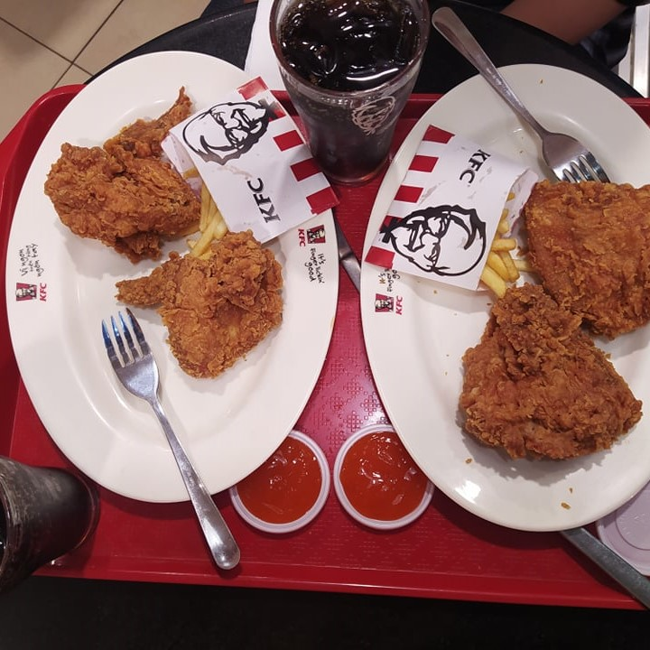

Sự gặp gỡ của chúng ta là khởi đầu cho tình yêu
Tình yêu của chúng ta là khởi đầu của hạnh phúc
Hạnh phúc của chúng ta đơn giản là được ở bên nhau
Không chỉ bên nhau ở hiện tại mà phải là cả tương lai
-
 Phạm Ngọc Bảo
Phạm Ngọc Bảo
-
 Nguyễn Hồng Ngọc
Nguyễn Hồng Ngọc
Hành trình tình yêu trong 3 năm vừa qua
(Như một câu chuyện kể dưới ngôi thứ nhất, nhân vật Bảo kể lại cho nhân vật Ngọc nghe dựa trên những điều có được ghi lại trong suốt 3 năm yêu nhau.
-

Vào ngày hôm đó, Ngọc đã đồng ý làm người yêu của Bảo! Hai ta yêu nhau thật sự là một điều Bảo thực sự bất ngờ! Vì nó đã đến sớm hơn Bảo mong đợi, hơn nữa là Ngọc chủ động nhắn tin cho Bảo, chưa cần tới cuộc hẹn để Bảo nhận được câu trả lời
Ngày 9 tháng 8 năm 2017 -

Ngày hôm đó Bảo không ngủ được. "Mình có người yêu rồi à?" là lời Bảo tự hỏi suốt đêm hôm đó. Thật hay là Ngọc cũng giống như Bảo. Bảo không biết nói với Ngọc như thế nào, Bảo chỉ muốn nói Bảo yêu Ngọc nhiều lắm!
Ngày 9 tháng 8 năm 2017 -
Và những ngày sau đó là những cuộc trò chuyện video call messenger cùng Ngọc! Vui cũng có buồn cũng có ^^. Nhưng... bản thân Bảo luôn có một ý nghĩ rằng "Ngọc đồng ý yêu Bảo chỉ đơn giản là để Bảo không mất tinh thần, và Ngọc không mất đi một người bạn". Bảo cần nhiều hơn như vậy, Bảo muốn rằng Ngọc yêu Bảo bằng tình yêu của Ngọc.
-

Nhưng rồi lâu dần, chúng ta trải qua những lúc không hiểu nhau! Bảo đã làm Ngọc không hài lòng. Ngọc cũng có những lúc như vậy.
-

Lần đầu tiên Bảo được hôn lên má người mình yêu, một sự ngọt ngào đáng nhớ
Ngày 16 tháng 3 năm 2019 -
Kỷ niệm 2 năm yêu nhau vào ngày hôm nay. Đến bây giờ Bảo cũng không thể nhớ được cảm xúc hôm ấy như thế nào. Cũng không nhớ được mình nói chuyện gì với nhau hay lời chúc dành cho nhanh là gì, bởi vì cũng tròn 1 năm rồi mà. Nhưng có 2 điều Bảo nhớ rõ, một là mình không đi chơi vì vướng lịch đăng ký cho Ngọc, và hai là điều duy nhất Bảo chắc chắn không thay đổi đấy là tình yêu đối với Ngọc.
Ngày 9 tháng 8 năm 2019 -
Một chút hẹn hò để Bảo chuẩn bị bắt đầu đi học quân sự 3 tuần liền
Ngày 1 tháng 9 năm 2019 -
Kỳ học không ngắn cũng không dài. Một ngày có tới 11 chế độ bắt đầu từ 5h tới 21h30, nhưng riêng Bảo có thêm một chế độ thứ 12 đấy là nói chuyện với Ngọc cơ đấy. Mặc dù có những hôm có nhiệm vụ không kịp hoàn thành chế độ này, nhớ và thương Ngọc nhiêu lắm. Mong tới nghày về với Ngọc.
Ngày 3 đến ngày 21 tháng 9 năm 2019 -
Bảo về rồi, lại một chút hẹn hò nữa để bù lại những nhớ nhung vừa qua ^^. Được nhận quà sinh nhật muộn từ Ngọc. Nhưng hơi buồn chút vì Ngọc hứa với Bảo một điều Ngọc vẫn chưa thực hiện được. Yêu Ngọc!!
Ngày 22 tháng 9 năm 2019 -
Đây là ngày thứ 800 yêu nhau. Nhưng mà Bảo cũng không nhớ 2 đứa có làm gì kỷ niệm sự kiện này hay không. Mốc thì cũng quan trọng đấy, nhưng quan trọng hơn là 2 đứa mình yêu nhau từ năm 17 tuổi đó.
Ngày 17 tháng 10 năm 2019 -
À đây rồi!!! Hóa ra chúng mình có kỷ niệm 800 ngày yêu nhau!!!!
Ngày 27 tháng 10 năm 2019 -

Gì đây?? Một chút đáng yêu dành cho Bảo ư?
Ngày 31 tháng 10 năm 2019 -

Ngọc đã khoe với Bảo thành tích của Ngọc, Bảo vui lắm, suy nghĩ rằng "người con gái này có thể lo cho tôi một tổ ấm" cơ đấy. ^^
Ngày 10 tháng 11 năm 2019 -

Trước ngày nhà giáo Việt Nam 2019 một tuần, Bảo đã suy nghĩ về điều mà Ngọc nói với Bảo vào năm ngoái, đấy là "Ngọc cũng muốn nhận hoa!". Thế là vào hôm nay, Bảo đã chuẩn bị kế hoạch tạo bất ngờ của mình dành cho Ngọc. Tìm hiểu và biết được nơi có hoa đẹp, tuy nhiên Bảo muốn tự mình đi lấy hoa, Bảo không tin tưởng ai mang hộ mình. Cả đi cả về mất 2 tiếng vì tắc đường nên đã đến muộn hơn dự định. Tuy nhiên vẫn làm Ngọc bất ngờ, vậy là thành công. ^^!
Ngày 19 tháng 11 năm 2019 -

Vẫn là Bảo chu đáo, chuẩn bị bí mật dành cho ngày sinh nhật sớm gần cả tháng cơ mà.
Ngày 8 tháng 12 năm 2019 -
Đây là Ngọc đi hỗ trợ anh chị chụp ảnh cưới. (Mong sao một ngày sẽ được nhờ ai đấy đến giúp Bảo và Ngọc chụp bộ ảnh với nội dung là "Cưới"). Bảo đi tới nơi chụp để đón Ngọc về cho kịp giờ đăng ký tín chỉ. Giữa đường Ngọc bảo bắp rang thơm thế là dừng xe mua cho người yêu ^^. Tối đó hai mình trải qua "cuộc chiến tranh giành vé đi học" cho Ngọc nhưng hôm đó cổng thông tin bị lỗi, phải chuyển sang ngày 14/12 cơ.
Ngày 10 tháng 12 năm 2019 -

Bộ phim Mắt biếc do Bảo làm đạo diễn, diễn viên chính là Ngọc.
Ngày 22 tháng 12 năm 2019 -
Sinh nhật của Ngọc. Hình như mình có giận nhau đấy. Lần này cũng như truyền thống, Ngọc bận đi thực tập nên là không gặp nhau đúng ngày được, thôi thì năm sau hai đứa cố gắng sắp xếp công việc để đón sinh nhật của nhau đúng thời điểm vậy. Chắc cũng khó đấy vì năm nay đến lượt Bảo thực tập và Ngọc thì cũng có công việc.
Ngày 26 tháng 12 năm 2019 -
Hôm qua lần đầu tiên đi bê tráp đám cưới luôn ^^. Nhưng mà thế nào chiều lại nhận được email báo phải đi bảo vệ lại bởi vì đồ án tốt quá, cần phải giám định. Hôm này là chị Hồng cưới, Bảo sáng đi bảo vệ đồ án, chiều đi tới chung vui với gia đình Ngọc.
Ngày 6 tháng 1 năm 2019 -

Năm mới 2020, chúng mình bên nhau sắp được 3 năm rồi, chúc tết nhau lần thứ 5 cơ đấy. Mong 2 đứa luôn bên nhau và giữ được tình cảm này.
Ngày 25 tháng 1 năm 2019 -
Mùng 2 tết đi chơi, hai đứa mình từ năm này qua năm khác mới được gặp nhau vậy nên quyết định về hơi muộn hơn bình thường một "chút chút" thôi. Nhưng hôm nay cực kỳ cực kỳ cực kỳ đặc biệt, bởi vì Ngọc đã tặng cho Bảo điều mà Ngọc hứa từ rất lâu rồi. Yêu Ngọc rất nhiều luôn!!!! ^
Ngày 27 tháng 1 năm 2020 -

Bảo đã dành 2 ngày liền để chuẩn bị 2 bí mật cho Ngọc, 14/2 tặng cho Ngọc rất nhiều bất ngờ luôn nhé. Socola này, cây tình yêu này 😊😊 làm cái ý không phải sở trường của mình nên làm hơi lâu. Không sao Ngọc vui là được
Ngày 14 tháng 2 năm 2020 -
Đây chắc là đi chơi valentine đây này, cơ mà sao mặt lại như thế này chứ??
Ngày 16 tháng 2 năm 2020 -
Lại có một ngày gặp nhau để được yêu thương hơn. Năm nhuận đầu tiên bên nhau. Mong sau 4 năm nữa mình lại được gặp nhau như vậy.
Ngày 29 tháng 2 năm 2020 -

Vẫn như mọi khi, luôn chuẩn bị và tặng Ngọc bất ngờ sớm hơn ngày chính. Chờ Ngọc ở ngõ để tặng bí mật, cơ mà gọi gọi gọi mãiiiiiii Ngọc chẳng nghe máy. Nhưng rồi cuối cùng cũng ra để nhận bí mật. Đố Ngọc biết lần ý tặng cái nào đấy.
Ngày 6 tháng 3 năm 2020 -
Phải nghỉ dịch ở nhà, không được gặp Ngọc trong thời gian dài lắm. Nói ra mong muốn của Bảo, đó là được ôm Ngọc ngủ và làm gì đó cho Ngọc lúc Ngọc mệt.
Ngày 6 tháng 4 năm 2020 -

Gặp nhau nhân dịp 998 ngày yêu nhau 😊 Thế là qua gần 2 tháng xa mặt nhưng không cách lòng, hai bạn đã được gặp lại nhau. Tuy thực sự là giận dỗi nhiều quá, nhưng gặp nhau là chẳng giận nhau được. Cũng là gần 1000 ngày yêu nhau 😊. Cực kỳ yêu thương công chúa của tôi 👸
Ngày 2 tháng 5 năm 2020 -
Tầm này Ngọc phải học cả thứ 7, chủ nhật. Thương quá, dặn Ngọc thích ăn gì thì nói với Bảo thì Bảo mang sang cho. Thương thực sự luôn, 3 tuần liền chẳng được về nhà, Bảo mang đồ tiếp tế từ quê lên cho Ngọc.
Ngày 9 tháng 5 năm 2020 -
Hôm nay về nhà mới, mẹ nhờ Ngọc sang giúp mẹ làm cơm. Cô tấm đảm đang tuy giận dỗi và ngủ quên nhưng vẫn ngoan. Đi chợ mua hoa, mua cá làm nhiều món nhưng Bảo thích nhất món xương chua ngọt ấy, ngon cực. Hôm ấy Ngọc còn nhận được thông báo đi thử việc cơ, Bảo hơi bất ngờ thôi vì thực ra Bảo biết Ngọc đang thi vào trường đó rồi. Lần đầu tiên được ôm Ngọc ngủ một chút.
Ngày 16 tháng 6 năm 2020 -
Ngày này 3 năm trước, là buổi học cuối cùng, cũng là ngày ma sau gần 3 năm thích Ngọc, Bảo đã lần đầu nói với Ngọc rằng Bảo có tình cảm với Ngọc. Nhờ có ngày hôm đó mà bây giờ chúng mình mới yêu nhau như bây giờ.
Ngày 17 tháng 6 năm 2020 -
Hôm nay là buổi đi chơi đầu tiên trên Hà Nội của hai đứa. Bảo nhiệt tình, yêu thương sáng đưa đi làm, chiều đón về chuẩn bị rồi tối đưa đi dự tiệc chia tay tốt nghiệp. Khi kết thúc bữa tiệc là cũng hơn 9h rồi nhưng vẫn quyết định đi chơi hẹn hò một chút rồi về 😊😊. Đang vuiii vẻ đến khi về nhà thì..... Đã giận nhau một cách đáng sợ😳😳 Đấy nhìn vui vẻ, hạnh phúc như kia nhưng cứ làm trái ý là Ngọc dỗi được luôn đấy ko đùa đâu!!!
Ngày 26 tháng 6 năm 2020 -

Kết thúc những chuỗi ngày giận hờn của hai đứa. Hôm nay được đi gần hết Hà Nội cùng Ngọc. Tối về hai đứa chưa ăn gì cả nên vào KFC ăn tối. Cơ mà trải nghiệm đối với thương hiệu KFC không được vui. Không cho ăn bằng đũa lại cho dao dĩa, đã không biết ăn rồi thì thôi dao còn chẳng sắc tí nào. Đã vậy lại còn xếp cho người ta 2 miếng lườn gà, trời ơi nó và ngấy lắm. Nói chung là không như ý nên là Ngọc hẹn đi ăn nem nướng ngon lắm!!!😋😋 Buổi tối đầu tiên hai đứa đi ăn cùng nhau rất vui!! Yêu thương Ngọc thật nhiều ❤️❤️❤️
Ngày 2 tháng 7 năm 2020 -

Đưa Ngọc đi làm, đi sửa xe điện và cả lần đầu đưa về quê. Buồn cười cái thời tiết, bao nhiêu thời gian chẳng mưa đi, đúng lúc có việc thì lại mưa. Giông gió to thôi cũng không mưa to. Thương Ngọc nhiều...
Ngày 4 tháng 7 năm 2020 -
Hôm nay Ngọc hẹn đi ăn nem nướng đây này. Ngọc cuốn cho Bao ăn đó, ăn ngon và cũng no ghê. Lỡ gọi nhiều quá ăn chẳng hết. Sau đó mình quyết định đi lên hồ Tây chơi như lời Bảo hứa với Ngọc. Đứng bên hồ nói chuyện thật mát nhưng mà lúc về chủ quan cứ nghĩ đi thẳng là hết vòng hồ, ai ngờ đâu lạc luôn, buồn cười thật. Nhưng mà vui. Đợt này rất nhiều chuyện mà lần đầu chúng mình mới có dịp trải nghiệm cùng với nhau đấy.
Ngày 9 tháng 7 năm 2020 -
Ngọc phải đi thi tiếng Anh nên cùng Ngọc ôn bài này, hôm nay được nghỉ nhưng sợ Ngọc cần lại đang trên đường về không trả lời Ngọc được nên ở lại cả ngày với Ngọc luôn...
Ngày 24 tháng 7 năm 2020 -
Một tuần trước kỷ niệm 3 năm yêu nhau này, hôm nay gặp nhau cho đỡ nhớ là chính, tiện thể lấy tài liệu còn chuẩn bị làm ra một câu truyện tình yêu.
Ngày 1 tháng 8 năm 2020 -

Trở thành một người chồng và người vợ hợp pháp, và kể từ đó, sự sống và cái chết rất rộng, và Anh nói, nắm tay nhau và già đi.
Ngày ... tháng ... năm 20xx
Một vài lời nhắn nhủ
Ngọc có thể mượn cuộc sống của Bảo để nói chuyện, chia sẻ những vui buồn cùng nhau. Có thể sẽ không có ai yêu Ngọc nhiều hơn Bảo. Những năm tháng dài sau này, Bảo sẵn sàng đồng hành cùng Ngọc. Bảo muốn trái tim của Bảo cũng như là trái tim của Ngọc, chúng ta sẽ hòa vào nhau, sẽ sống theo nó.

{kind=link}
{kind=link}
{kind=link}
{kind=link}
{kind=link}
{kind=link}
{kind=link}
{kind=link}
{kind=link}
{kind=link}
{kind=link}
{kind=link}
{kind=link}
{kind=link}
{kind=link}
{kind=link}